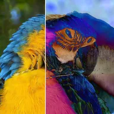

ডিফারেন্স

লেয়ারটি তার পেছনের অংশ থেকে কতটা আলাদা তা দেখায়, ডিফারেন্স ব্লেন্ডিং মোডের মতো, তবে ইফেক্ট তালিকার এই জায়গায়।
সেটিংস
| সেটিং | ধরন | রেঞ্জ | ডিফল্ট |
|---|---|---|---|
| পরিমাণ | সংখ্যা | 0% থেকে 100% | 100% |

লেয়ারটি তার পেছনের অংশ থেকে কতটা আলাদা তা দেখায়, ডিফারেন্স ব্লেন্ডিং মোডের মতো, তবে ইফেক্ট তালিকার এই জায়গায়।
| সেটিং | ধরন | রেঞ্জ | ডিফল্ট |
|---|---|---|---|
| পরিমাণ | সংখ্যা | 0% থেকে 100% | 100% |